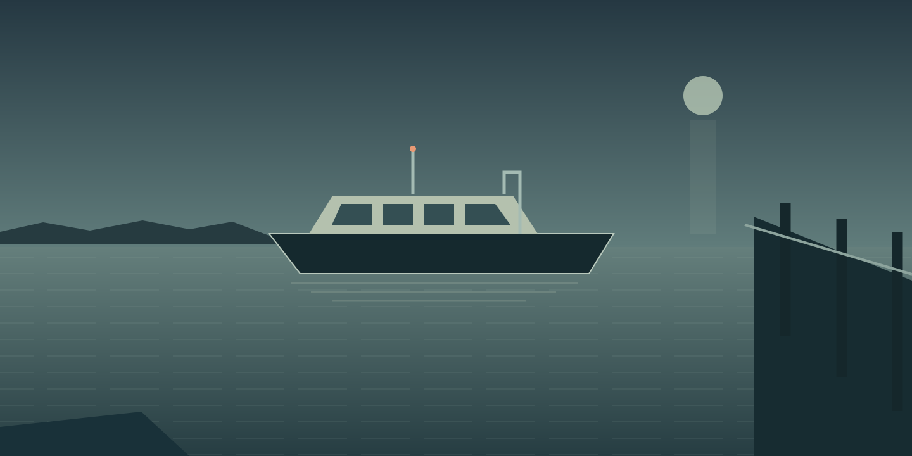

The last ferry
REVISION 01
Needs review
THE LAST FERRY / CUE 0100:00:01,500
Its the last boat home.
Original frame study · no video playback9.500 s / 3 cues
00:0000:0500:10
The cue sheet
0 of 3 reviewedThe last ferry / Revision 01
Cue 01of 03
Changes save as you type and start a fresh review.
Use HH:MM:SS,mmm · for example 00:00:03,200
3.000 s on screen26 characters
Review the complete words and timing before marking this cue.
The last ferry / Revision 01
Stand behind this revision
Read every cue, resolve the sample suggestion, then approve the whole clip. The SRT will contain all three cues in this exact revision.
Review all 3 cues before export.
A draft for your next pass
Checking browser storage…
No checkpoint saved yet
This is a local sample editor. It does not transcribe, play or publish media. Drafts are stored only in this browser; an SRT download is a file on your device. Understand local recovery